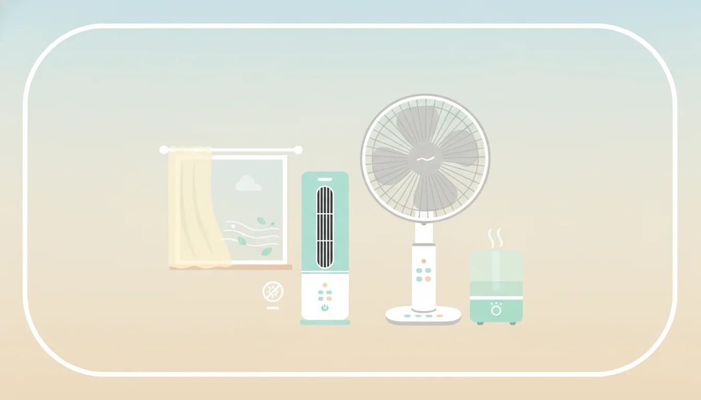

一人暮らしの夏を涼しく乗り切る冷風家電の選び方
公開日: 2026-08-12
本ページのリンクには一部アフィリエイトリンクが含まれます(#PR)。
🌡️ 一人暮らしの夏、冷房だけに頼ると電気代がかさむ理由
夏場のワンルームや1Kの部屋は、日中の熱がこもりやすく、エアコンをつけっぱなしにすると電気代がじわじわ膨らんでいく。特に単身向けの部屋は窓が小さかったり、換気がしにくかったりする構造も多く、冷房効率が上がりにくいことがある。そこで役立つのが、冷風扇や扇風機といった補助的な家電だ。エアコンと組み合わせることで設定温度を下げすぎずに済み、結果として電力消費を抑えられる場合が多い。
まずは自分の部屋の広さや窓の位置、風の通り道を確認しておくと、どんな家電を選べばいいかのヒントになる。
💨 扇風機と冷風扇の違いを理解しておく
「冷風扇」という名前から誤解されがちだが、これはエアコンのように冷媒を使って冷やす仕組みではない。水や氷を使って風を涼しく感じさせるタイプの家電で、気化熱を利用して温度をわずかに下げつつ、風量で体感温度を下げる仕組みだ。一方、扇風機は空気を循環させるだけで、室温そのものを下げる効果はない。
- 扇風機:電気代が安く、部屋の空気を動かして涼感を得る
- 冷風扇:水や氷を使うため、扇風機よりやや電気代がかかるが涼しさは上がりやすい
- サーキュレーター:エアコンの冷気を部屋全体に回すのが得意
どれが正解というよりは、使う場面によって向き不向きが変わってくる。
📏 一人暮らしの部屋のサイズ別に考える選び方
6畳程度のワンルームなら、コンパクトな扇風機や小型の冷風扇で十分カバーできることが多い。置き場所に困らないよう、卓上サイズやタワー型など、床面積を取らないデザインを選ぶのも一つの手だ。
逆に8畳以上のリビングを兼ねた部屋や、キッチンと居室が繋がった1Kの場合は、風量調整の幅が広いモデルや、首振り機能付きのものを検討してみるといいかもしれない。部屋の隅々まで風が届きにくいと、涼しさを感じにくくなるためだ。ロフト付きの部屋のように上下に空間が分かれている間取りでは、上に溜まった熱気をサーキュレーターで循環させる使い方も検討したい。
⚡ 省エネ性能を見るときのチェックポイント
省エネを重視するなら、消費電力(W数)の表示だけでなく、風量ごとの電力の変化も見ておきたい。強風だけでなく弱風・微風の段階が細かく設定できる機種は、必要な時だけ強めに使い、普段は弱めに抑えるといった使い分けがしやすい。
- 消費電力(W)の記載を確認する
- DCモーター搭載かどうか(ACモーターより省エネ傾向にあることが多い)
- タイマー機能の有無(就寝時の切り忘れ防止に役立つ)
DCモーターの製品は本体価格がやや高めな傾向にあるが、長時間使う人ほど電気代の差が出やすいので、使用頻度と相談しながら決めるとよさそうだ。目安として、1日8時間以上使うような人は数シーズンで価格差を回収できるケースもあるので、購入前に大まかな使用時間を想定しておくと判断しやすい。
🧴 冷風扇を使うときの注意点
冷風扇は水や氷を使うぶん、湿度が上がりやすいという特徴もある。梅雨明け直後のように、もともと湿度が高い時期に多用すると、部屋がジメジメして逆に不快に感じることもあるので注意したい。使用後は水を入れたままにせず、こまめにタンクを洗浄することも忘れずに。カビや水垂れの原因になりやすい部分でもある。
また、氷を入れるタイプは涼しさが増す分、こまめに氷を補充する手間もかかる。手軽さを重視するなら、水のみで使えるシンプルなモデルの方が向いている人もいるだろう。タンクの取り外しやすさも、日々のお手入れの負担を左右するポイントなので、購入前に構造をチェックしておくと安心だ。
🔌 音や設置スペースなど、一人暮らし特有の注意点
ワンルームでは家電同士の距離が近くなりがちで、運転音が気になる場面も多い。特に就寝時に使う場合は、静音モードの有無や、実際の運転音の目安(dB表示)を確認しておくと安心だ。
コンセントの位置や延長コードの取り回しも、地味だが大事なポイント。ベッドやデスクの位置を考えたうえで、コード長や電源スイッチの位置が使いやすいかどうかも見ておきたい。賃貸の場合はコンセントの数が限られていることも多いため、他の家電と併用する時間帯を考えておくと、ブレーカーが落ちるといったトラブルも避けやすい。
❓ よくある質問
Q. 扇風機と冷風扇、どちらを先に買うべきですか?
予算や部屋の湿度環境によって変わるが、まず扇風機で様子を見て、暑さが厳しい時期だけ冷風扇を追加するという使い方をしている人も多い。両方を使い分けられると、季節や体調に合わせて調整しやすくなる。
Q. エアコンと併用する場合、どう使い分ければいいですか?
エアコンの冷気は下に溜まりやすいため、サーキュレーターや扇風機で部屋全体に風を回すと、設定温度を上げても涼しさを感じやすくなる場合がある。結果的に消費電力を抑えられることも期待できる。
Q. 一人暮らしでも大きめの冷風扇を置いても大丈夫ですか?
部屋のスペースと相談する必要はあるが、キャスター付きで移動できるタイプなら、使わない時期は収納場所に移せるので、サイズだけで諦めなくても良いケースもある。購入前に本体のサイズと自分の部屋の家具配置を照らし合わせておくと失敗を防ぎやすい。
この記事でおすすめしたいアイテム
 PR
PR
 PR
PR
 PR
PR
本ページのリンクには一部アフィリエイトリンクが含まれます(#PR)。